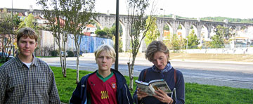
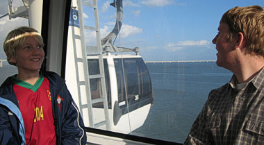

|
Elevador de Santa Justa er bygd av en av Eiffels elever ved forrige århundreskifte for å forbinde den øvre og nedre bydel. I dag er den en turistatrakson, ikke minst på grunn av utsikten. Den opprinnelege oppgaven er forlengst oppgitt.
|
Fantastiske Lisboa
De som leser Palmeposten grundigere enn vi leser nettavisene, vil vite at vi gjestet Lisboa helg i desember. Sist viste vi bare et bilde av regnvåte julegater, men det var nå faktisk en litt urettferdig presentasjon av Lisboa.
Det er litt sus over Lisboa. Europeisk kulturhistorie og ikke minst sjøfartstradisjon, liksom strutter ut av bygninger, plasser og skulpturer. Bare Roma overgår Lisboa i iøynefallende fordums storhet. Kanskje er det kontrastene som slår en, for ved nærmere gjennomlesing av reiseguiden viser det seg at Lisboa slett ikke har så mange minner fra de virkelig gamle dager. Men: Alt er relativt. Kanskje er det settingen som gjør at selv nye ting, som f.eks. sjøfartsmonumentet (i bydelen Belem), som ble avduket i 1960 som 500-års minne for Henrik Sjøfareren, virker gamle og ærverdige. I parantes bemerket: Da de konglige nylig mottok det portugisiske presidentparet, var de utstyrt med Dom Henrique (prins Henrik) ordenen. Ordenen oppkalt etter sjøfareren er Portugals høyeste utmerkelse.
Som kjent ligger ikke Lisboa ved Middelhavets bredder, men ved utløpet av elva Tejo og breddene til Atlanterhavet. Byen er bygd opp igjen etter at et jordskjelv jevnet det meste med jorden i 1755. Etter skjelvet kom havet med en flodbølge som gjorde ødeleggelsene ennå verre. Tusenvis døde.

|
Aqueduto das Águas Livres er ikke en romersk akvadukt, men en imponerende vannledning fra 1800-tallet.
|
Mye har skjedd siden 1755. Lisboa er slett ingen museumsby, men hver periode har etterlatt seg sine minnesmerker. Det gjelder ikke minst vår tid, som representerer en voldsom opptur både i Lisboa og resten av Portugal. Endringene etter nellikreveolusjonen og medlemskapet i EU er bemerkelsesverdige. Mest iøynefallende er den nye tid i Lisboa sitt Expo-område (hvor fredelige Norge var representert ved NATO-paviljongen!).

|
Luftig transport langs elvebredden i Expo-området, med den gigantiske brua i bakgrunnen.
|
Det som i første grad trekker folk fra Lisboa til Expo-området i dag, er kanskje det gigantiske kjøpesenteret. Men her ligger også et av verdens flotteste akvarier, Oceanario. Her er også store utstillingsområder, strandpromenade, gondolheiser og mye spenstig arkitektur. Lett adkomst er sikret via Lisboas velfungerende og topp moderne metro-system.

|
Familiebilde på Castelo de São Jorge som engang var en maurisk borg. Borgen som i dag kneiser over de sentrale handlegatene i Lisboa ble bygd omkring 1930! (Det finnes ikke mange andre steder hvor borgbygging holdt seg på moten så lenge...)
|
Dersom du vil vite mer, er dette er OK lenke.
|